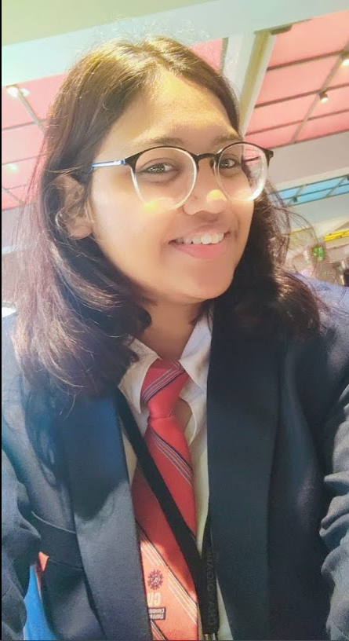

Aastha Joshi
Contact Information
Email:
aasthajoshi890@gmail.com
LinkedIn:
Aastha Joshi
GitHub:
trewilljo
Objective
Motivated and detail-oriented Computer Science student with a passion for
software development and cloud computing. Seeking an internship
opportunity to apply my skills in programming, web development, and
problem-solving in a dynamic team environment.
Education
-
RSV Higher Secondary School (10th Grade)
- Percentage: 72%
- Year of Passing: 2020
-
RSV Higher Secondary School (12th Grade)
- Percentage: 77%
- Year of Passing: 2022
-
Chandigarh University (2022 - 2026)
- Bachelor of Engineering in Computer Science (Cloud Computing)
- Current CGPA: 7.4
Skills
- Programming Languages: Python, Java, C++
- Web Development: HTML, CSS, JavaScript
- Databases: MySQL
- Version Control: Git
-
Soft Skills: Communication, Teamwork, Problem-Solving
Projects
-
GUI Game for Disabled Persons (2022-2023)
As a creative/graphic designer, I designed accessible game characters
and interfaces for a game tailored for disabled individuals.
Technologies: Python, Tkinter
-
SaaS Website for Drawing and Wireframing (2023-2024)
Developed a SaaS-based web application that enables users to create
and share wireframes and digital drawings online.
Technologies: HTML, CSS, JavaScript
Achievements & Certifications
- Microsoft Certified: Azure Fundamentals
- Exam 1Z0-1127-24: Oracle Cloud Infrastructure 2024 Generative AI
- Introduction to Data Science – LinkedIn Learning
- Network Defence – Cisco
- How to Write and Publish a Scientific Paper